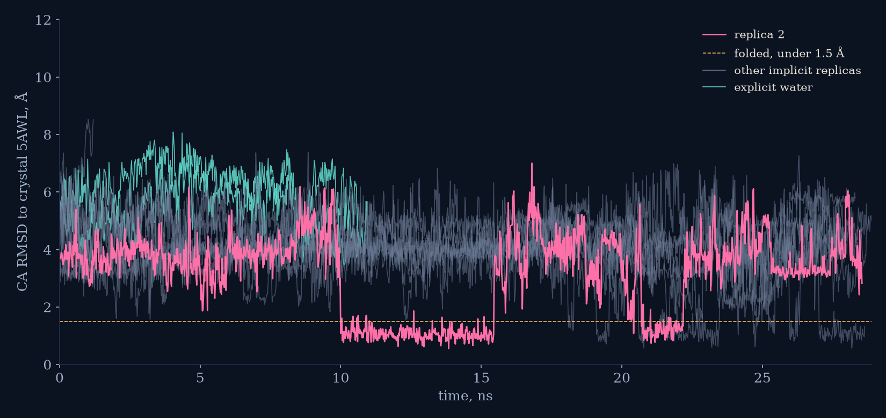
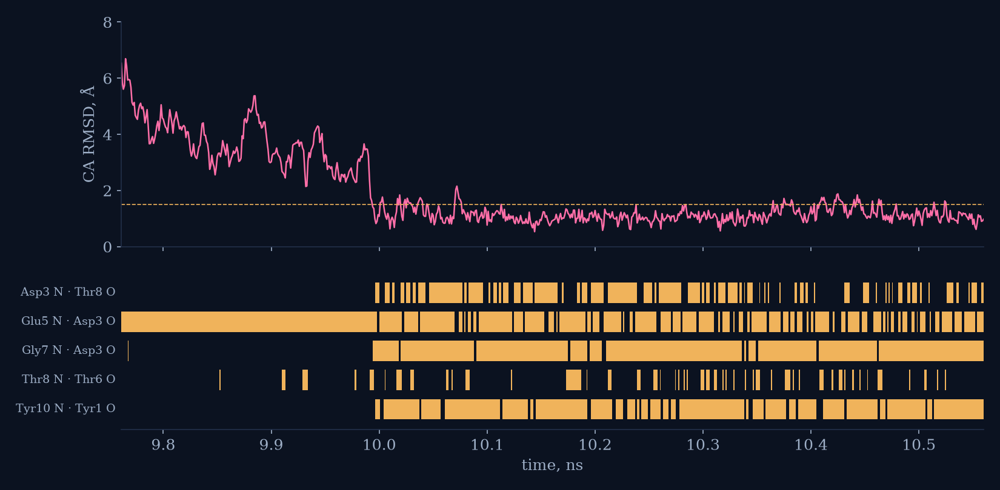
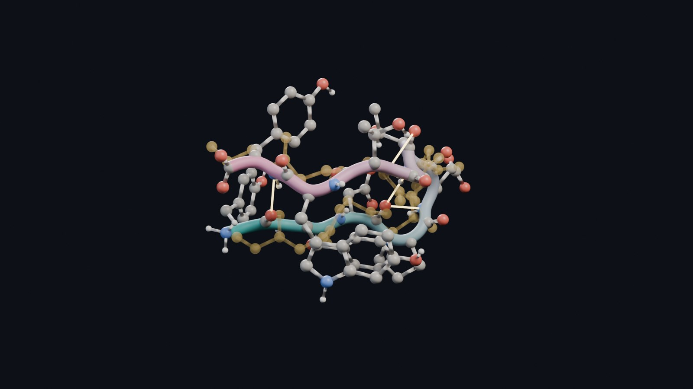
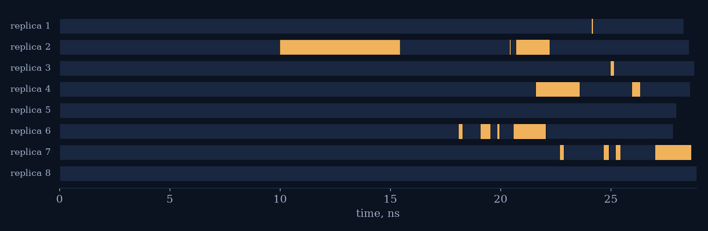

FOLD. A protein finds its shape
Chignolin is one of the smallest things that folds like a protein: ten amino acids, 166 atoms, a hairpin held by five hydrogen bonds. Its shape was measured in a crystal. I pulled the chain straight, dropped eight copies into simulated water at 340 K, and left them to the force field. Nothing in the file remembers the hairpin. At ten nanoseconds one copy dropped into the crystal shape in a single step, and the film watches it happen a picosecond at a time. By the time I stopped the runs, six of the eight had found it.
The molecule
Y Y D P E T G T W Y
CLN025 is a designed variant of chignolin (Honda and colleagues, 2008), a beta hairpin: two strands lying side by side, the turn around aspartate 3 to glycine 7, and the two tyrosines at the ends stacked with the tryptophan on one face. The judge throughout is the root-mean-square distance of the ten alpha carbons from the crystal after the best superposition. A straight chain is about 10 Å away. Under 1.5 Å counts as folded, and a replica only counts as unfolded again above 3 Å, so a folded state does not flicker.
The race

Eight implicit replicas and the two explicit twins, 20 ps per point, up to 29 ns. Replica 2 is the one the film follows: nine nanoseconds of tangles that look almost right and come apart, then at 10.00 ns a single step from about 4 Å to under 1 Å, and it stays there for the next five and a half nanoseconds. Six of the eight implicit replicas reached the folded state at some point in 28 ns. Two, replicas 5 and 8, never got closer than 1.6 and 2.9 Å.
The fold, one picosecond at a time

The turn bond, glutamate 5 to aspartate 3, is there before the fold and has been coming and going for nanoseconds. The two ends then swing together and three bonds close within about ten picoseconds of each other: glycine 7 onto aspartate 3 at 9.992 ns, tyrosine 10 onto tyrosine 1 at 9.996, aspartate 3 onto threonine 8 at 10.004. The fifth, threonine 8 onto threonine 6, arrives at 10.171 ns and stays the weakest of the five, flickering on the edge of its 3.5 Å cutoff. Over the half nanosecond after the fold the backbone sits 1.14 Å from the crystal on average, with a best frame at 0.53 Å.

Does it stay?

Replica 2 held the crystal shape from 10.00 to 15.46 ns, lost it, and found it twice more, about a quarter of its run folded in all. Replica 6 first got there at 18.1 ns, replica 4 at 21.6, replica 7 at 22.7, and replica 7 was folded when the runs were stopped at 28.6 ns. Replicas 1 and 3 only brushed the state, 80 and 180 ps each, and replica 3's best frame was 1.49 Å, right on the cutoff. Replicas 5 and 8 never folded. Across the eight runs the chain was inside the folded state 6% of the time, 14.3 ns of 228. At 340 K this is what folding looks like: not a click but an equilibrium, with the folded state a place the chain keeps returning to.
The slow twins
The two explicit runs are the control. Same chain, same force field and temperature, but 2,611 real water molecules around it. Explicit water cost about 2.6 times as much per nanosecond here (3.8 ns per hour against 10 for the implicit runs, all sharing the card), so in the same 2 h 55 min the twins reached 10.6 and 10.9 ns and neither folded; the closest either came was 3.5 Å. That is expected. In the long explicit-water simulations of Lindorff-Larsen and colleagues (2011) this peptide's folding time at 340 K is about 0.6 µs, so eleven nanoseconds is a couple of percent of one folding time. The fold in the film is a real motion of a real force field, but it arrived early because implicit solvent removes the friction of water and over-stabilises compact states. That is the honest reading of the day: the shape is right, the clock is fast.
How it was made
- OpenMM 8.6 with CUDA on one RTX 4090. Amber ff14SB, GBn2 implicit solvent for the eight main replicas, TIP3P explicit water with particle-mesh Ewald for the two twins (2,611 waters in a rhombic dodecahedron 4.9 nm on a side). Langevin middle integrator at 340 K, 4 fs steps with hydrogen mass repartitioning. Every replica starts from the same extended chain built from the sequence, with its own random seed.
- Trajectories every 20 ps for the race, every 1 ps for the fold, the crystal superposed on each frame's alpha carbons for the overlay. Analysis with mdtraj. The five native bonds are read off the crystal, not typed in.
- Rendered atom by atom in Blender 5.2 (Cycles): polar hydrogens only, a backbone tube coloured from the N terminus to the C terminus, the crystal as a gold backbone ghost. About 1.5 s per frame at 1440p. Film composited with cairo, narration by Kokoro, the fold's chord from five sines gated by the five bonds.
- The simulations ran for 2 h 55 min (09:29 to 12:24) on the same card as the renders, so the rates are lower than a dedicated run would give.
Caveats. Implicit solvent flatters folding: it removes the friction of water and is known to over-stabilise compact states, which is why the explicit twins are there. 340 K is a hot day for a protein and close to the melting temperature the classic long simulations used for this peptide, chosen so the fold happens in hours rather than days. The judge is one number on ten atoms; a 1.5 Å cutoff on alpha carbons is a generous definition of "the crystal". One day, one fold. The first-fold times here, 10 to 25 ns, are an implicit-solvent artefact as much as a measurement, and should not be compared with the explicit-water folding time.
Code and run driver: the repo, folder day61. Trajectories are not committed.